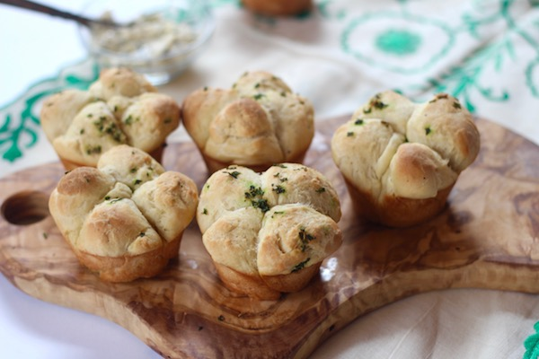

Easy Nordic recipes!

Four leaf clover bread
Description:
Is your viking husband about to ransack a nearby fishing village? There is no better way to wish him good luck than baking him a Four Leaf Clover Bread!
Ingredients:
For this recipe, we are going to need:
- 1.5 dl barley flour;
- 0.5 dl graham flour;
- 2 teaspoons crushed flax seeds;
- 1 dl water;
- 1/2 tbsp lard
- 1 krm salt
Directions:
- Mix the ingredients into a dough that is allowed to rest cold for two days. The breads then become smoother, darker and tastier than if they are baked out immediately.
- Thumb out 8 round loaves, make four pinches in the sides so that the loaf looks like a four-leaf clover.
- Make three small impressions as decoration on the top. Bake in the oven at 150 degrees for 10-13 minutes or in a pan over an open fire (the result can then be a little uneven).
Wholemeal flour with both sprouts and skins gives a richer taste that matches better with the Viking-era original bread. Because the bread is unfermented, it becomes quite hard and compact.
Back to home